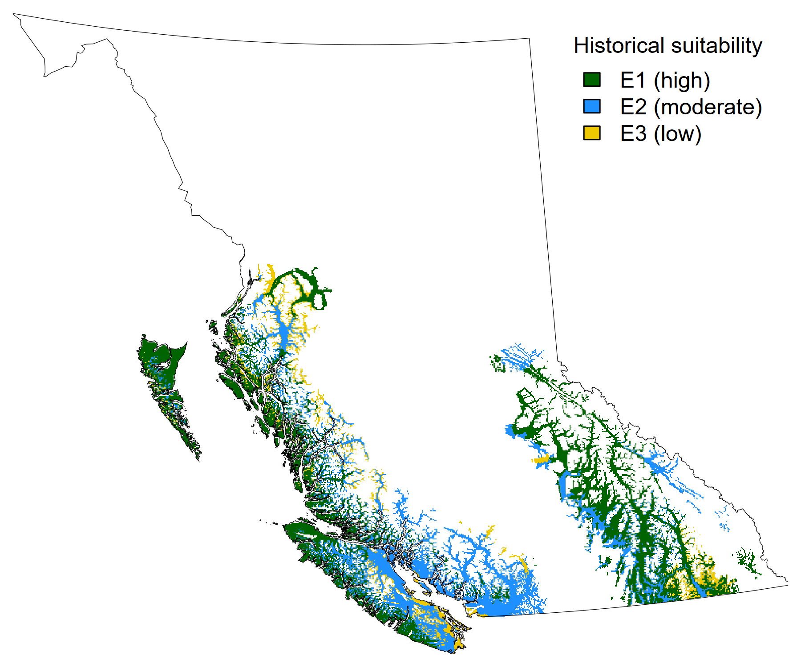
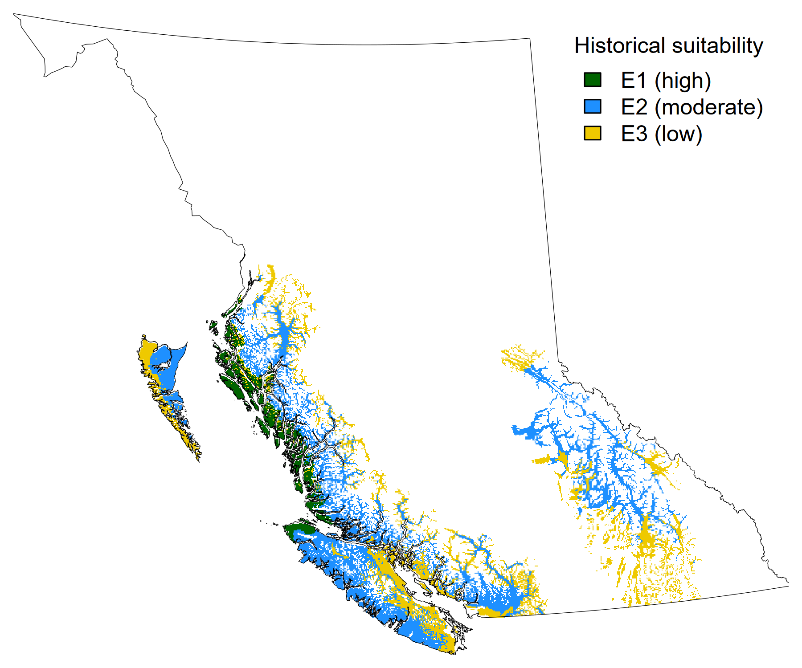
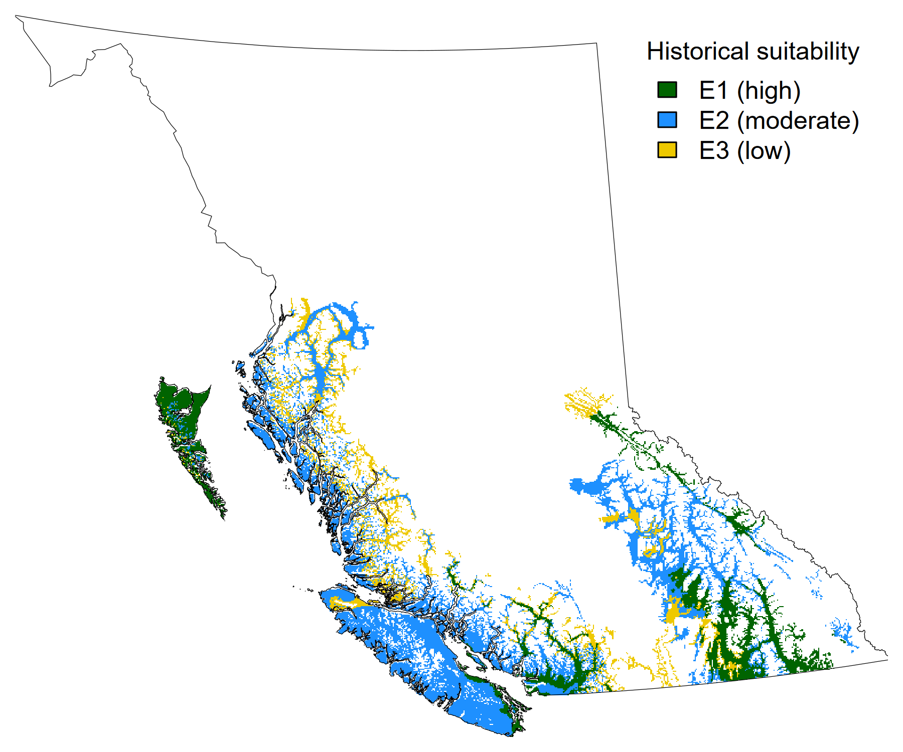
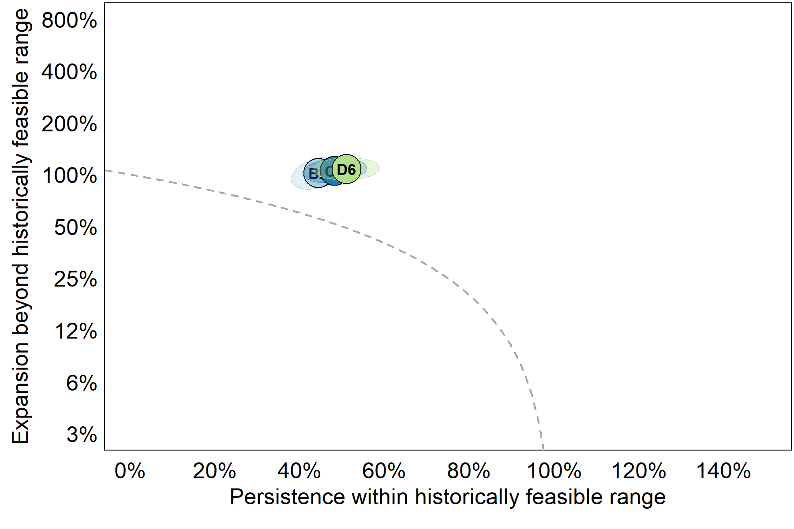
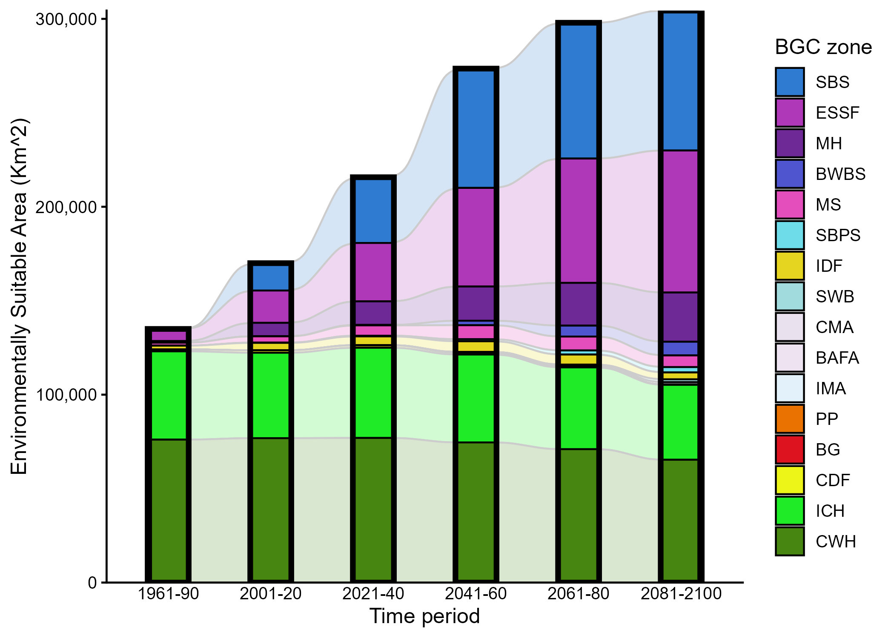
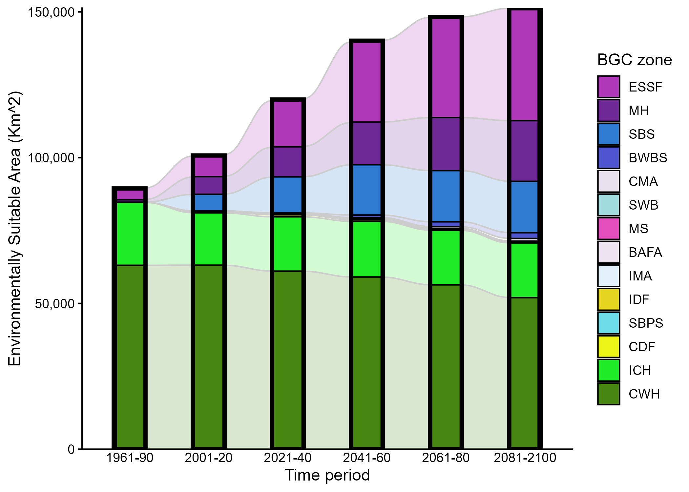
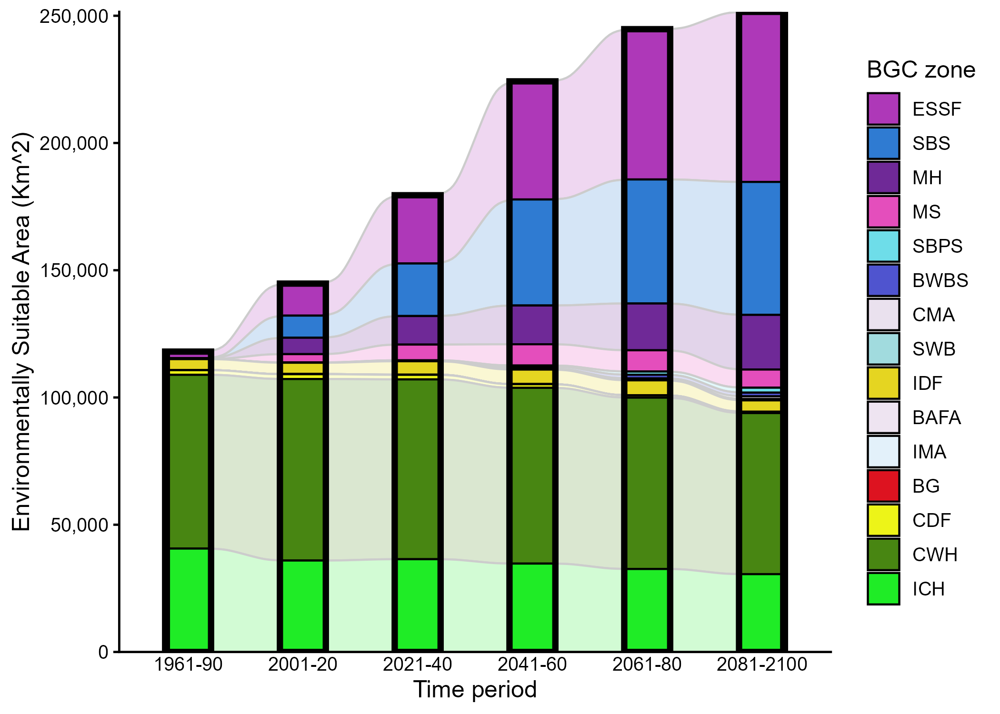
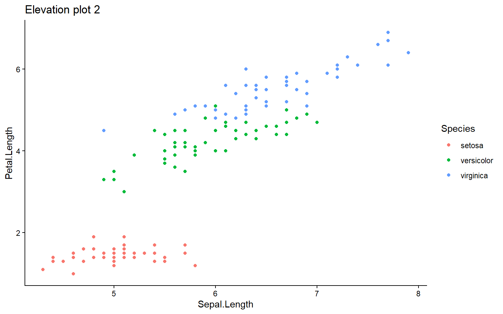
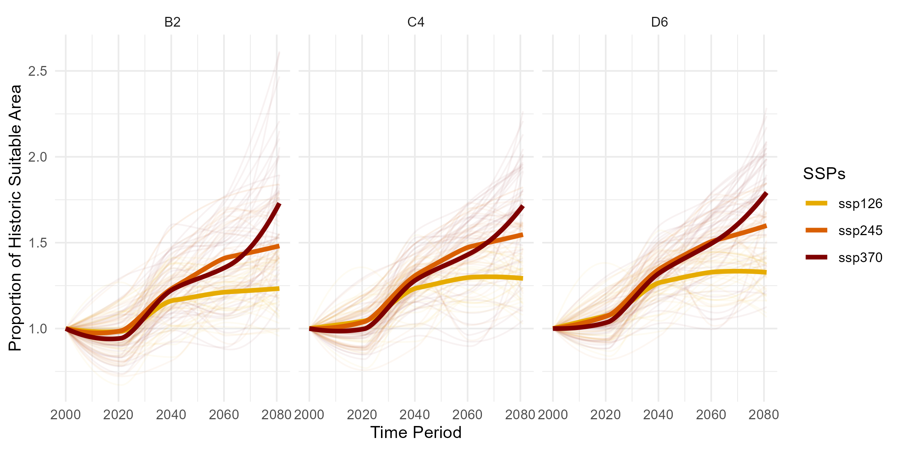
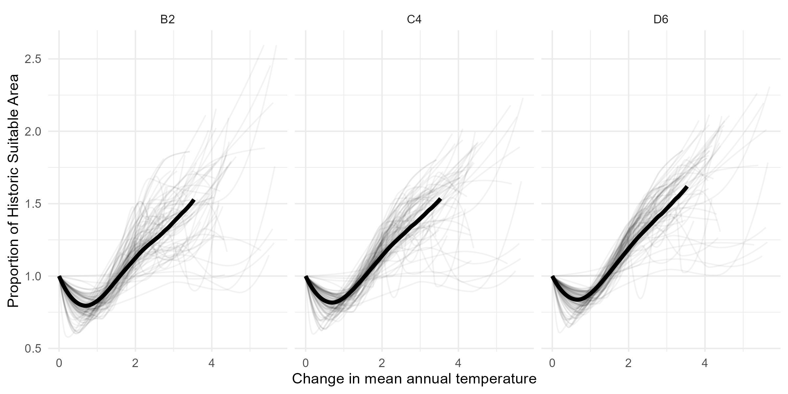

Welcome to the Species Summary Dashboard for Western Redcedar (abbreviated as “Cw”), a place for species-specific summaries of the inputs and outputs of the Climate Change Informed Species Selection (CCISS) tool. This dashboard is intended to support forest practitioners, planners, and land managers, in making informed, forward-looking decisions about where Cw may be suitable to plant over the coming decades. As climate conditions shift, these decisions will become increasingly critical for maintaining productive, resilient, and adaptive forest landscapes.
At the top of the page, you will find tabs for the following summaries:
- Reference (historical baseline) Period
- Maps and descriptive summary of the species range in British Columbia during the baseline climate normal period of 1961-1990 in terms of its environmental suitability across Biogeoclimatic (BGC) zones and across three edatopic (soil nutrient x moisture) regimes, relative to the local biogeoclimatic subzone:
- Poor/subxeric (B2)
- Mesic/zonal (C4)
- Rich/hygric (D6)
- Maps and descriptive summary of the species range in British Columbia during the baseline climate normal period of 1961-1990 in terms of its environmental suitability across Biogeoclimatic (BGC) zones and across three edatopic (soil nutrient x moisture) regimes, relative to the local biogeoclimatic subzone:
- CCISS Projections
- A collection of visualizations and interpretations of the CCISS tool projections through 2100 for this species in British Columbia, exploring the changes in its suitable range over time. This includes:
- Projected persistence and expansion of its suitable range relative to its historically suitable range
- Shifts in its suitability within each BGC zone
- Predictions according to the different Shared Socioeconomic Pathways (SSPs) and increasing mean annual temperature (MAT)
- A summary of projected changes in particular areas of interest in BC
- Projected changes along elevational gradients
- A collection of visualizations and interpretations of the CCISS tool projections through 2100 for this species in British Columbia, exploring the changes in its suitable range over time. This includes:
- Forest Health
- A summary of forest health considerations and concerns for this species, interpreted in light of CCISS projections
- Additional Resources
- A collection of other tools, websites, and guides that provide additional information about this species, particularly covering background ecology and silvics information not summarized here
This dashboard is intended to provide a species-specific overview and interpretation of the data from the CCISS tool and does not represent management recommendations. Please see the CCISS Documentation tab > Decision Guidance section for more information on the appropriate and intended uses of these data.
For Western Redcedar, a species with high ecological, cultural, and economic value, the CCISS projections reveal a complex pattern: potential expansion of suitability into upslope and northern areas, and localized declines in low-elevation and drought-prone regions. While the tool offers valuable insights into broad-scale trends, suitability projections must be interpreted with caution. Many areas of projected change are also areas with high uncertainty in climate predictions. Furthermore, factors such as soil texture, drainage, land-use history, forest health pressures, and biotic interactions (e.g., competition or browsing) can strongly influence actual outcomes on the ground. These nuances emphasize the importance of pairing climate tools with on-the-ground knowledge and site-specific judgement when planning future Western Redcedar management.
Western Redcedar (Cw) is native to the Pacific Northwest of North America, with a broad geographic range extending from northern California, through Oregon, Washington, and British Columbia, into southeastern Alaska. Eastward, it extends as far inland as the western slopes of the Rocky Mountains in Montana and Idaho.
Western Redcedar is best adapted to climates with abundant precipitation and high humidity but can tolerate a range of conditions. In BC, Cw is most commonly found in cool and cold mesothermal climates on the coast and in montane continental cool temperate climates in the interior wet belt (Klinka and Brisco 2009). The species grows across a wide variety of soil types, but is most productive on fresh to moist, nutrient-rich soils (Klinka and Brisco 2009).
In British Columbia, Western Redcedar is found in two distinct populations: a coastal population, and an interior population. Approximately 81% of the province’s mature Cw volume is found in the coastal population (Klinka and Brisco 2009). These two populations are ecologically distinct due to differences in climatic regimes, topography, and associated vegetation, but genetically, they are quite similar (Klinka and Brisco 2009). It is common for Western Redcedar to co-occur on mesic and wet sites with Western Hemlock (Tsuga heterophylla) throughout its range in BC.
In the maps below, each color represents the species environmental suitability during the historical reference period* of 1961-90 as determined by expert ratings. Green represents a high suitability (E1 rating), blue represents moderate suitability (E2), yellow represents low suitability (E3), and white indicates areas that are unsuitable for the species. See CCISS Documentation tab > Methods > Environmental Suitability Ratings for more detailed definitions and information on the expert rating process.
*Note on terminology: The historical reference period is sometimes referred to as the “baseline” or simply “historical” or “reference” period.



How is the total environmentally suitable area of the province (all colored areas on the maps) split across Biogeoclimatic (BGC) zones? The pie chart to the right explores this by showing the total suitable area (Km2) of BC for Western Redcedar by BGC zone based on climates of the historical reference period (1961-1990).
Summary of its prevalence within these BGC zonesOn the coast, Redcedar is most abundant in the Coastal Western Hemlock (CWH) zone, especially on mesic to wet sites, where it grows alongside Douglas-fir, Grandfir, and Bigleaf Maple (Egan 1999). It also occurs, though less frequently, in the Coastal Douglas-fir (CDF) zone and low in the Mountain Hemlock (MH) zones, where it tends to be subdominant or scattered.
In the Interior, it is a key species in the Interior Cedar-Hemlock (ICH) zone, particularly in the wetter subzones of southeastern and central British Columbia, and in the IDF, although typically as a minor component. It can also occasionally be found in the wetter subzones of the Sub-Boreal Spruce (SBS), Montane Spruce (MS), Ponderosa Pine (PP), and lower Engelmann Spruce - Subalpine Fir (ESSF) zones (Government of British Columbia 2025).
On this page, you will find a visual and interpretive synthesis of the CCISS tool projections for this species, including:
Proportion of the historic range that the species will remain environmentally suitable (i.e. persist) or become newly suitable (i.e. expand) by edatope.
Mean changes in environmental suitability across its geographic range in BC, by future time period and edatope.
Shifts in suitability across specific provincial biogeoclimatic (BGC) zones.
Western Redcedar is overall projected to persist within about 40-60% of its historically suitable range, while its suitable range is projected to expand slightly, to be about 1-1.5 times larger than the historically suitable range. Expansion of Cw’s suitable area is projected to be driven by higher temperatures expected under increased warming scenarios. These trends are similar across the three edatopes, which are shown to be clustered tightly together for this species. This suggests that within a BGC zone, populations of Redcedar in different edatopes will respond similarly to climate change.

Overall, the total suitable area in BC for Western Redcedar is projected to increase with climate change, but the specific locations where it is most suitable will shift.
The most notable pattern observed in the interior of BC is the expansion of Cw suitability into the sub-boreal, as ICH (Interior Cedar - Hemlock)-like climates are projected to spread northward and westward into the (current) Sub-Boreal Spruce (SBS) zone. Under historical climate (1961-1990), the area between Smithers and Prince George, including the whole Interior Plateau, was unsuitable for Cw. CCISS projections suggest that much of this area will not only become suitable for Cw, but may even become moderately (E2) to highly (E1) suitable by 2100.
In addition, locations in the southeast of the province that are currently Engelmann Spruce - Subalpine Fir (ESSF) or Montane Spruce (MS) zones, are predicted to become more climatically like ICH zones in the near future, making them newly suitable for Western Redcedar. As these are two zones that are upslope of Cw’s current range, this means that higher elevation areas will become more environmentally suitable for Cw over time.
Meanwhile, many parts of the Coastal Western Hemlock (CWH) and ICH zones where suitability was high during the reference period are projected to decrease in suitability and in some cases become fully unsuitable as these areas become more climatically similar to drier and/or warmer southern zones in Washington, Oregon, and California. However, in many of its most suitable habitats along the coast (e.g., with an E1 suitability ranking historically) there is little projected change in suitability. This is likely because climates are not projected to change dramatically in these subzones, but rather will be maintained by coastal upwelling and weather patterns.
These patterns are shown in 20-year intervals and by Edatopic space in the figures to the right.



Key to BGC zones: CCISS Documentation > Definitions

Key to BGC zones: CCISS Documentation > Definitions

Key to BGC zones: CCISS Documentation > Definitions
In general, Western Redcedar’s total suitable area is projected to expand across BC over the century, with increased suitability in the ESSF, MH, and SBS zones, and relatively stable suitability overall in the CWH and ICH. Some expansion of suitability into the Boreal White and Black Spruce (BWBS), IDF, MS, and Sub-Boreal Pine - Spruce (SBPS) zones is also projected as these zones are projected to become warmer and wetter over time.
According to CCISS projections, many mapped units within the Sub-Boreal Spruce (SBS) zone, especially wetter subzone/variants, are projected to shift towards more Interior Cedar-Hemlock (ICH)-like climates in the future. This likely explains Cw’s projected expansion of suitable area into the SBS zone, as well as small portions of the BWBS and SBPS zones. Similarly, wet variants in the lower elevation portions of the ESSF zone are projected to undergo similar shifts toward more ICH-like climates, which means that Cw’s expanded suitability projected in this higher-elevation zone may lead to up-slope range expansion. The Mountain Hemlock (MS) zone is above the CWH in elevation throughout the Coast mountains and historically supported small populations of Cw at low elevations. Warming temperatures are the likely driver of expanded suitability for Cw projected in this zone as well.
Text and maps and/or plots zooming in to any particular geographic areas of interest
Elevational patterns: Text to summarize elevational patterns

Page describing the potential forest health considerations for each species, as appropriate
Links: Field Guide to Forest Damage in British Columbia 2024 Summary of Forest Health Conditions in British Columbia| Resource | Description |
|---|---|
| Tree Species Compendium | Descriptions and characteristics of tree species found in British Columbia and comparison information regarding each species ecological suitability and tolerances to a variety of external factors. |
| Another link | description |


The figure to the left shows the projected trends for the change in proportion of the species’ historically suitable area within the three representative edatopes (poor/subxeric B2, mesic/zonal C4, and rich/hygric D6), from the years 2000 to 2080. Note there are two tabs: the first plotted by time period, and the second plotted by mean annual temperature (MAT) in Celcius. Each thin line represents a different biogeoclimatic projection model and the thick lines represent the overall mean.
On the first tab, each colored line represents one of the Shared Socioeconomic Pathways (SSPs):
- The optimistic scenario of SSP1-2.6 (yellow) aligns with strong mitigation efforts to limit warming to 2°C
- The scenario of SSP2-4.5 (orange) reflects current policies with moderate mitigation
- The high-emission scenario SSP3-7.0 (red) assumes no mitigation, leading to steadily increasing emissions
For Western Redcedar, this figure shows that the amount of suitable area relative to its historic range is going to increase in all projected scenarios, with only a small increase in the optimistic scenario, a larger increase with moderate greenhouse gas mitigation, and the largest range expansion in the high-emission scenario. This trend is projected to be similar across the three edatopes.
The second figure shows that the projected proportion of historically suitable area occupied by Redcedar will increase with increasing mean annual temperature.
This row contains explanatory text above the tabset.
Overall, the total suitable area in BC for Western Redcedar is projected to increase with climate change, but the specific locations where it is most suitable will shift.
The most notable pattern observed in the interior of BC is the expansion of Cw suitability into the sub-boreal, as ICH (Interior Cedar - Hemlock)-like climates are projected to spread northward and westward into the (current) Sub-Boreal Spruce (SBS) zone. Under historical climate (1961-1990), the area between Smithers and Prince George, including the whole Interior Plateau, was unsuitable for Cw. CCISS projections suggest that much of this area will not only become suitable for Cw, but may even become moderately (E2) to highly (E1) suitable by 2100.
In addition, locations in the southeast of the province that are currently Engelmann Spruce - Subalpine Fir (ESSF) or Montane Spruce (MS) zones, are predicted to become more climatically like ICH zones in the near future, making them newly suitable for Western Redcedar. As these are two zones that are upslope of Cw’s current range, this means that higher elevation areas will become more environmentally suitable for Cw over time.
Meanwhile, many parts of the Coastal Western Hemlock (CWH) and ICH zones where suitability was high during the reference period are projected to decrease in suitability and in some cases become fully unsuitable as these areas become more climatically similar to drier and/or warmer southern zones in Washington, Oregon, and California. However, in many of its most suitable habitats along the coast (e.g., with an E1 suitability ranking historically) there is little projected change in suitability. This is likely because climates are not projected to change dramatically in these subzones, but rather will be maintained by coastal upwelling and weather patterns.
These patterns are shown in 20-year intervals and by Edatopic space in the figures to the right.
More text